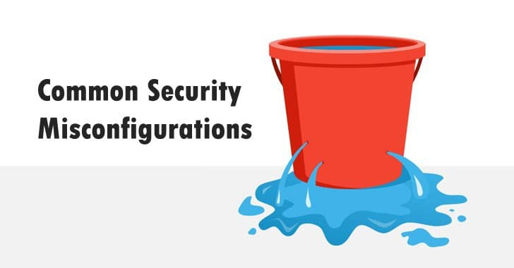

HASH Y CERTIFICADOS
👆👆 HASH, FIRMA DIGITAL, CERTIFICADOS Y PKI
Tipos de amenazas en Ciberseguridad
Existen varios tipos de amenazas que pueden comprometer la seguridad de sistemas y datos. Se pueden dividir en dos grandes grupos
- Internas
- Extenas
💣 Amenazas Internas
Riesgos que provienen de empleados o personas con acceso legítimo a los sistemas, que pueden actuar maliciosamente o por descuido.
Tambien denominados Insiders
- Clasificación de Amenazas Internas
- Amenazas internas intencionadas
- Empleados maliciosos: Utilizan sus privilegios y conocimientos de la organización para causar daños intencionados, como filtrar información confidencial
- Externos con acceso interno: Cibercriminales que han logrado acceder a la red o edificio de una organización y la utilizan para causar daños
- Amenazas internas accidentales
- Empleados negligentes: Causan daños no intencionados debido a errores humanos o decisiones equivocadas, como compartir datos confidenciales por error
- Malas prácticas: Por ejemplo, insertar un USB infectado en un ordenador corporativo sin mala intención
Cómo Evitar Amenazas Internas
- Modelo de amenazas: Utiliza el modelado de amenazas para comprender la postura de seguridad de tu organización.
- Principio de privilegios mínimos: Implementa y practica el principio de privilegios mínimos, asegurando que los empleados solo tengan acceso a la información y sistemas necesarios para su trabajo.
- Autenticación segura: Garantiza una autenticación segura para todas las cuentas y sistemas, utilizando métodos como la autenticación multifactor.
- Gestión de cuentas: Elimina o actualiza las cuentas cuando los empleados se vayan de la organización.
- Monitoreo de actividades: Investiga las actividades inusuales y mantén un monitoreo constante de los sistemas para detectar comportamientos sospechosos.
- Educación y concienciación: Capacita a los empleados sobre las mejores prácticas de seguridad y la importancia de seguir los protocolos establecidos.
🚨 Amenazas externas
- Malware: Software malicioso diseñado para dañar o infiltrarse en sistemas. Incluye virus, gusanos, troyanos y spyware.
- Ransomware: Un tipo de malware que encripta los datos de la víctima y exige un rescate para liberarlos.
- BotNets: Grupo de ordenadores infectados y controlados por un atacante de forma remota
- Phishing: Ataques que buscan engañar a las personas para que revelen información confidencial, como contraseñas o datos bancarios, generalmente a través de correos electrónicos falsos.
- Ataques de denegación de servicio (DoS/DDoS): Intentos de hacer que un servicio en línea no esté disponible sobrecargándolo con tráfico falso.
- Ataques Man-in-the-Middle (MitM): Interceptación de comunicaciones entre dos partes para robar o alterar la información transmitida.
- Inyección SQL: Ataques que explotan vulnerabilidades en aplicaciones web para ejecutar comandos SQL maliciosos en la base de datos.
Cómo Evitar Amenazas Internas
- Modelo de amenazas: Utiliza el modelado de amenazas para identificar y comprender las posibles vulnerabilidades y riesgos dentro de tu organización. Esto te ayudará a anticipar y mitigar posibles ataques internos.
- Principio de privilegios mínimos: Asegúrate de que los empleados solo tengan acceso a la información y sistemas necesarios para realizar su trabajo. Limitar los privilegios reduce el riesgo de que datos sensibles sean comprometidos.
- Autenticación segura: Implementa métodos de autenticación robustos, como la autenticación multifactor (MFA), para proteger las cuentas y sistemas. Esto añade una capa adicional de seguridad, dificultando el acceso no autorizado.
- Gestión de cuentas: Mantén un control riguroso sobre las cuentas de usuario. Asegúrate de eliminar o actualizar las cuentas cuando los empleados dejen la organización o cambien de rol.
- Monitoreo de actividades: Realiza un monitoreo constante de las actividades en los sistemas para detectar comportamientos inusuales o sospechosos. Investiga cualquier actividad que parezca fuera de lo común.
- Educación y concienciación: Capacita a los empleados sobre las mejores prácticas de seguridad y la importancia de seguir los protocolos establecidos. La formación continua ayuda a crear una cultura de seguridad dentro de la organización.
🚨 Amenazas externas
- Malware: Software malicioso diseñado para dañar o infiltrarse en sistemas. Incluye virus, gusanos, troyanos y spyware.
- Ransomware: Un tipo de malware que encripta los datos de la víctima y exige un rescate para liberarlos.
- BotNets: Grupo de ordenadores infectados y controlados por un atacante de forma remota
- Phishing: Ataques que buscan engañar a las personas para que revelen información confidencial, como contraseñas o datos bancarios, generalmente a través de correos electrónicos falsos.
- Ataques de denegación de servicio (DoS/DDoS): Intentos de hacer que un servicio en línea no esté disponible sobrecargándolo con tráfico falso.
- Ataques Man-in-the-Middle (MitM): Interceptación de comunicaciones entre dos partes para robar o alterar la información transmitida.
- Inyección SQL: Ataques que explotan vulnerabilidades en aplicaciones web para ejecutar comandos SQL maliciosos en la base de datos.
Ataques a Correo Electrónico
Los ataques a correos electrónicos son una de las formas más comunes de ciberataques hoy en día. Se aprovechan del hecho de que el correo es una herramienta esencial y ampliamente usada, tanto en entornos personales como laborales
1. SPAM
Objetivo: Llenar tu bandeja con mensajes irrelevantes o publicidad.
- Usa filtros anti-spam.
- No respondas a correos desconocidos.
2. Phishing
Objetivo: Robar datos personales suplantando entidades legítimas.
- Verifica el remitente del correo.
- No ingreses datos desde enlaces sospechosos.
3. Virus y Malware
Objetivo: Infectar tu dispositivo mediante archivos adjuntos.
- No abras archivos de remitentes desconocidos.
- Mantén tu antivirus actualizado.
4. Ransomware
Objetivo: Cifrar tus archivos y pedir un rescate.
- Haz copias de seguridad con frecuencia.
- Evita abrir enlaces o archivos sospechosos.
5. Spear Phishing
Objetivo: Ataque personalizado para engañar a personas específicas.
- Confirma instrucciones importantes por otro medio.
6. Business Email Compromise (BEC)
Objetivo: Suplantar ejecutivos para desviar fondos.
- Verifica cambios financieros con llamadas u otros canales.
Consejos Generales
- Activa la autenticación en dos pasos (2FA).
- Usa contraseñas seguras y cámbialas regularmente.
- Capacita a usuarios sobre ciberseguridad.
Origen y autenticidad de aplicaciones
Cuando hablamos del origen y autenticidad de aplicaciones, nos referimos a verificar de dónde proviene una app y si es confiable o legítima antes de instalarla. Esto es fundamental para proteger la seguridad de tus datos y dispositivos
- Fuentes oficiales: Google Play Store, Apple App Store, Microsoft Store, sitios oficiales.
- Fuentes no oficiales (⚠️ riesgo): Tiendas de terceros, archivos APK desconocidos, enlaces por mensajes o redes.
⚠️ Riesgos de Apps de Origen Dudoso
- Instalación de malware o spyware.
- Robo de información personal.
- Acceso no autorizado a tus dispositivos.
Autenticidad de una Aplicación
Para saber si una app es legítima y no una copia modificada:
- Verifica el nombre del desarrollador.
- Observa descargas y reseñas.
- Revisa los permisos solicitados.
- Comprueba certificados digitales.
- Consulta el sitio web oficial.
- Investiga opiniones en foros tecnológicos.
Recomendaciones Generales
- Descarga siempre desde fuentes oficiales / fiables.
- Verifica, si es posible, la firma de verificación, checksum o hash
- Evita apps “mod” o piratas.
- Evitar el sideloading o root/jailbreak
- Activa Play Protect u otros escáneres de seguridad.
- Supervisa los permisos de las apps.
Actualizaciones del SO y Aplicaciones
Las actualizaciones del sistema operativo (SO) y de las aplicaciones son clave para mantener la seguridad, estabilidad y rendimiento de cualquier dispositivo
¿Qué son?
Son mejoras o correcciones para solucionar errores, añadir funciones nuevas, mejorar la seguridad y el rendimiento.
Importancia de Actualizar
- Seguridad: Corrigen vulnerabilidades críticas.
- Rendimiento: Mejoran la velocidad y eficiencia.
- Compatibilidad: Aseguran el buen funcionamiento con otras apps y servicios.
- Nuevas funciones: Acceso a mejoras y herramientas recientes.
⚠️ Riesgos de No Actualizar
- Mayor exposición a virus y ataques.
- Fallas o cierres inesperados en apps.
- Problemas de compatibilidad y lentitud.
Recomendaciones
- Activa las actualizaciones automáticas.
- Verifica actualizaciones de forma regular.
- Mantén suficiente espacio libre en tu dispositivo.
- No ignores los mensajes del sistema.
- Vigila el EOL (End Of Live) del sistema. Migra a versiones con soporte
- En entornos empresariales, activa la supervisión centralizada. Herramientas como WSUS, Intune o Ansible
Software de Detección de Amenazas
¿Qué es?
Es un conjunto de herramientas diseñadas para detectar, bloquear y eliminar amenazas digitales como virus, malware, spyware, ransomware, rootkits, etc.
Tipos de Software de deteccion de amenazas
- Antivirus: Detecta y elimina virus conocidos / Escanea archivos y programas en tiempo real.
- Antivirus de Escritorio
- Antivirus "en linea"
- Analisis de ficheros en linea
- Antivirus portable
- Antivirus Live: Arranca un sistema "limpio", o de rescate
- Antimalware: Defensa contra amenazas más complejas. Detecta malware sofisticado como troyanos, adware o ransomware.
- Firewall: Controla el tráfico de red. Bloquea accesos no autorizados.
- Antispyware: Previene el espionaje de datos. Detectan programas espias
- Herramientas anti-ransomware / detectores - descifradores
- EDR / ED&R (Endpoint Detection & Response) Soluciones avanzadas para empresas. Detecta comportamientos sospechosos en dispositivos
- ATP (Advanced Threat Protection): Efectivo contra amenazas persistentes avanzadas (APT)
- Sandbox: Uso de entornos aislados que simulan un sistema informático con la finalidad de observar el comportamiento de ciertos archivos o programas para detectar acciones maliciosas
🔧 Funciones Comunes
- Escaneo en tiempo real
- Análisis bajo demanda
- Cuarentena de archivos sospechosos
- Actualizaciones automáticas
- Notificaciones de seguridad
Ejemplos Populares
- Windows Defender
- Avast, Bitdefender, Norton
- Malwarebytes, Kaspersky
- CrowdStrike (EDR empresarial)
Recomendaciones
- Activa la protección en tiempo real.
- Actualiza regularmente el software.
- No instales múltiples antivirus a la vez.
- Haz escaneos periódicos.
Métodos de infección
- Explotando una vulnerabilidad
- Ingenieria Social
- Archivo malicioso
- Dispositivo extraible
- Cookies maliciosas
- Keylogger
Sospecha de infección
- ✔ Equipo lento, con errores o se bloquea, sobrecalentamiento, agotamiento de la batería
- ✔ Pantalla azul de la muerte
- ✔ Programas que se abren y se cierran automáticamente
- ✔ Falta de espacio de almacenamiento
- ✔ Ventanas emergentes, barras de herramientas y programas no deseados
- ✔ Correos electrónicos y mensajes que se envían sin tu consentimiento
- ✔ Eliminación de documentos sin tu consentimiento
- ✔ Redirección del navegador a páginas desconocidas
- ✔ Cambio de nombre de documentos (cifrado: ransomware en proceso)
- ✔ Procesos del sistema que acaparan demasiados recursos (administrador de tareas)
📶 Medidas de Seguridad en Redes Inalámbricas (WiFi)
¿Por qué es importante proteger tu red Wi-Fi?
Para evitar que extraños usen tu red, roben tus datos o comprometan tus dispositivos conectados.

misconfiguration
Una “misconfiguration” (o mala configuración) es cuando un sistema, programa o dispositivo está configurado de forma incorrecta (o se dejan los valores de fábrica), lo que puede provocar que no funcione bien o que tenga fallos de seguridad.
A02:2025 Security Misconfiguration en owasp top 10 => num 2
Las misconfigurations son una de las causas más frecuentes de brechas de seguridad, porque no dependen de un fallo del software, sino de un error humano en la configuración.
Medidas Básicas
- Cambiar el nombre del SSID (no usar el predeterminado).
- Establecer una contraseña fuerte y compleja.
- Usar cifrado WPA2 o WPA3.
- Desactivar WPS para mayor seguridad. WPS (Wi‑Fi Protected Setup) Es un mecanismo pensado para conectar dispositivos a una red Wi‑Fi de forma sencilla, sin tener que escribir la contraseña manualmente.
- Actualizar el firmware del router.
- Cambia la contraseña de administrador del router.
Medidas Opcionales pero útiles
- Ocultar el SSID (red no visible en búsquedas).
- Filtrado de direcciones MAC.
- Desactivar funciones innecesarias (ej. acceso remoto).
- Reducción del rango de cobertura
- Desactivar la red wi-fi cuando no se utilice
- Monitorizar la red mientras se utilice
- Revisa qué dispositivos están conectados a tu red.
- Evita usar redes públicas sin protección o VPN.
Inventariar Servicios de Red
¿Qué es?
Es el proceso de identificar, registrar y monitorear todos los servicios activos en la red, como servidores, protocolos y aplicaciones. Esto incluye servidores web, DNS, FTP, DHCP, correo electrónico, impresoras en red, etc.
Por qué es importante?
- Detecta servicios no autorizados o inseguros.
- Facilita el mantenimiento y administración.
- Ayuda en auditorías y cumplimiento normativo.
- Permite una respuesta rápida ante incidentes.
¿Qué se debe inventariar?
- Tipo de servicio (DNS, HTTP, FTP...)
- Dirección IP / nombre del host
- Sistema operativo
- Puerto y protocolo
- Versión del software
- Responsable / área
- Estado actual (activo/inactivo)
🛠️ Herramientas útiles
- Nmap – para escaneo de puertos/servicios
- Angry IP Scanner
- Netdiscover
- Advanced IP Scanner
- GLPI, Lansweeper (inventario completo)
- Scripts personalizados (PowerShell, Bash)
Buenas prácticas
- Realizar inventarios periódicos.
- Automatizar escaneos si es posible.
- Validar que cada servicio tiene una función justificada.
- Eliminar servicios innecesarios.
- Documentar todo de forma clara.

🕵️♂️ IDS - Sistema de Detección de Intrusos
¿Qué es un IDS?
Un IDS (Intrusion Detection System) es un sistema que monitoriza el tráfico de red o la actividad de los sistemas para detectar comportamientos sospechosos o maliciosos, como ataques, accesos no autorizados o uso indebido de recursos
Tipos de IDS
- NIDS: Basado en red. Ej: Snort, Suricata.
- Monitorea el tráfico de red completo
- Se instala en un punto estratégico de la red
- HIDS: Basado en host. Ej: OSSEC, Wazuh.
- Se instala en dispositivos individuales (servidores, PCs).
- Analiza logs, procesos, archivos del sistema.
- DIDS: IDS Distribuido
- Se instala en distintos puntos estratégicos de la red.
- Monitorea el tráfico de red completo
- Recoge todos los datos de los IDS, analiza y correlaciona todos los eventos producidos en la red, evaluando de manera global lo que ocurre en la red en cada momento.
Funcionamiento
- Captura tráfico/red o actividad del sistema. Fuentes de datos: Logs de sistemas, dispositivos de red, sistema IDS propio...
- Analiza con firmas o comportamiento.
- Se utilizan reglas y filtros para detectar anomalias
- Genera Informes y Alertas ante amenazas. Es capaz de enviar alertas por mail o SMS
- No bloquea el tráfico (solo detecta e informa).
¿Que es un IPS?
Un IPS es una herramienta de ciberseguridad que monitoriza el tráfico de red en tiempo real, detecta ataques y actúa automáticamente para bloquearlos o mitigarlos.
Comparativa IDS vs IPS
| Característica | IDS | IPS |
|---|---|---|
| Acción | Detecta y Alerta | Detecta, Alerta y Bloquea |
| Ubicación | Junto a equipos de la red | Entre equipos y la red |
| Ejemplo | Snort (modo IDS) | Palo Alto Networks |
- Ejemplos de ataques que puede detener
- Escaneos de puertos.
- Intentos de explotación de vulnerabilidades conocidas.
- Ataques de denegación de servicio (algunos tipos).
- Tráfico asociado a malware.
- Intentos de inyección SQL.
- Ataques contra aplicaciones web (según la configuración).
Ejemplos Populares
- Snort
- Suricata
- OSSEC
- Wazuh
- Security Onion
- Palo Alto Networks
- Cisco Secure
- Fortinet Fortigate
Recomendaciones
- Combínalo con otras soluciones de seguridad.
- Configura alertas automáticas.
- Mantén actualizado el sistema de firmas.
- Úsalo dentro de una estrategia de defensa en profundidad.
Practica
Utiliza comando de bash base64 con sus opciones, modificadores
Practica
Instalar extensión para Chrome: FlowCrypt. Clave pública
Practica
PGP / GPG / GNUpg
Practica
OpenSSL
Antivirus "LIVE"
Fabrica un pendrive arrancable con un antivirus "LIVE"